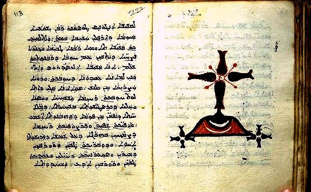

Illuminated cross and concluding liturgical text in Syriac.
Quick Summary
In Lesson 11, we examined how Syriac attaches direct object pronouns directly to the verb, creating a highly compressed “fast direct object” (e.g., qaṭl-eh, “he killed him” vs. qṭal l-eh, “he killed to-him”).
5-Question Warm-Up Drill
(Answers in Section 9)
As we wrap up our core tour of Syriac syntax, we encounter the final few connective tissues that hold sentences together: Demonstrative pronouns (this, that, these, those) and Numbers.
Cross-Linguistic Comparison: Demonstratives
Semitic languages feature a close-range pointing word (“this”) and a far-range pointing word (“that”).
Syriac Trick: The far demonstrative (“that”, haw ܗܘ) is spelled with the same consonants as the 3rd person independent pronoun (hū ܗܘ = he/it), distinguished in pointed texts by a supralinear vs. sublinear dot. Context dictates the meaning.
1. Pointing Words (Demonstratives)
Demonstratives in Syriac must agree with the noun they modify in gender and number. Unlike English (which puts “this” before the noun: “this king”), Syriac prefers to place the demonstrative after the noun, or even isolated at the front of a sentence.
2. Conditional Clauses (ʾen)
Syriac expresses “If X, then Y” using the particle ʾen (if).
The “if” half of the sentence is the protasis, and the “then”
half is the apodosis. Usually, Syriac doesn’t even use a word
for “then”; it simply starts the second clause, often with
w- (and).
3. Comparatives (men)
Syriac lacks special adjective forms for “bigger,” “faster,” or
“better” (like Greek’s -τερος or English’s -er). Instead, it uses the
standard adjective and the preposition men (from/than).
| Distance | Gender / Number | Estrangela | Translit | Translation |
|---|---|---|---|---|
| Close | Masc Sg | ܗܢܐ | hānā | this (m) |
| Close | Fem Sg | ܗܕܐ | hādē | this (f) |
| Close | Common Pl | ܗܠܝܢ | hālēn | these (c) |
| Far | Masc Sg | ܗܘ | haw | that (m) |
| Far | Fem Sg | ܗܝ | hāy | that (f) |
| Far | Masc Pl | ܗܢܘܢ | hānōn | those (m) |
| Far | Fem Pl | ܗܢܝܢ | hānēn | those (f) |
Semitic numbers from 3 to 10 famously exhibit “gender polarity”—masculine nouns take the numeral form ending in -ā (which looks morphologically feminine), while feminine nouns take the short numeral form without -ā. For 1 and 2, the numeral agrees directly in gender with the noun.
| Number | With Masc. Nouns | With Fem. Nouns | Meaning |
|---|---|---|---|
| 1 | ܚܕ (ḥad) | ܚܕܐ (ḥdā) | (One) |
| 2 | ܬܪܝܢ (trēn) | ܬܪܬܝܢ (tartēn) | (Two) |
| 3 | ܬܠܬܐ (tlātā) | ܬܠܬ (tlāt) | (Three) |
| 4 | ܐܪܒܥܐ (ʾarbaʿā) | ܐܪܒܥ (ʾarbaʿ) | (Four) |
| 5 | ܚܡܫܐ (ḥamšā) | ܚܡܫ (ḥammeš) | (Five) |
| 6 | ܫܬܐ (štā) | ܫܬ (šet) | (Six) |
| 7 | ܫܒܥܐ (šabʿā) | ܫܒܥ (šbaʿ) | (Seven) |
| 8 | ܬܡܢܝܐ (tmānyā) | ܬܡܢܐ (tmānē) | (Eight) |
| 9 | ܬܫܥܐ (tešʿā) | ܬܫܥ (tšaʿ) | (Nine) |
| 10 | ܥܣܪܐ (ʿesrā) | ܥܣܪ (ʿsar) | (Ten) |
| Estrangela | Transliteration | Gender | Meaning | Notes |
|---|---|---|---|---|
| ܫܪܪܐ | šrārā | m. | truth, reality | Root š-r-r (to be firm). Cf. Heb ʾĕmet |
| ܫܠܡܐ | šlāmā | m. | peace, greeting | Root š-l-m. Heb Shalom, Arabic Salam |
| ܚܝܐ | ḥayyē | m.pl. | life | Used heavily by John in the NT |
| ܥܠܡܐ | ʿālmā | m. | world, eternity | Temporal and spatial boundary |
| ܗܟܢܐ | hākannā | adv. | thus, so | Also shortened to ܗܟܢ hākan |
| ܐܢ | ʾen | conj. | if | Introduces condition |
| ܚܫܘܟܐ | ḥešūḵā | m. | darkness | Antonym of nūhrā (light) |
| ܫܠܚ | šlaḥ (Peal) | verb | to strip off / send | Used for stripping off garments or sin |
The Departure
Narrative note: The conclusion of the initial cycle of Mar Yukhannan’s acts. The king uses a conditional statement (“If any man…”) to establish a new decree. The section closes with a demonstrative and thematic “peace”.
Sentence 1
ܟܕ ܐܣܝܗ ܝܘܚܢܢ ܠܡܠܟܐ ܡܠܟܐ ܩܡ kad ʾassy-eh Yūḥannan l-malkā, malkā qām. kad (when) ʾassy-eh (he-healed-him) Yūḥannan (John) l-malkā (to/the-king), malkā (the-king) qām (stood-up). → When Yukhannan healed the king, the king stood up.
Sentence 2
ܘܐܡܪ ܠܥܡܐ ܕܝܠܗ ܗܟܢܐ w-ʾemar l-ʿammā d-īl-eh hākannā: w-ʾemar (and-said) l-ʿammā (to-the-people) d-īl-eh (which-were-his) hākannā (thus): → And he said to his people thus:
Sentence 3
ܐܢ ܐܝܢܐ ܒܪܢܫܐ ܠܐ ܢܫܠܚ ܚܛܝܬܐ ܕܝܠܗ ܢܩܛܠܘܢܝܗܝ ʾen ʾaynā barnāšā lā nešlaḥ ḥṭītā d-īl-eh, neqṭlūn-yhy! ʾen (If) ʾaynā (which/any) barnāšā (man) lā (not) nešlaḥ (will-cast-away) ḥṭītā (sin) d-īl-eh (which-[is]-his), neqṭlūn-yhy (they-will-kill-him)! → “If any man does not cast away his sin, they shall kill him!”
Sentence 4
ܝܘܚܢܢ ܐܡܪ ܠܡܠܟܐ ܠܐ ܗܟܢܐ Yūḥannan ʾemar l-malkā: lā hākannā. Yūḥannan (John) ʾemar (said) l-malkā (to-the-king): lā (not) hākannā (thus/so). → Yukhannan said to the king: “Not so.”
Sentence 5
ܐܠܗܐ ܕܫܪܪܐ ܫܒܩ ܠܒܝܫܐ ʾAlāhā d-šrārā šbaq l-bīšā. ʾAlāhā (God) d-šrārā (of-truth) šbaq (forgave) l-bīšā (to-the-evil-one / evil). → “The God of truth forgave the evil.”
Sentence 6
ܢܘܗܪܐ ܗܢܐ ܛܒܐ ܗܘ ܡܢ ܚܫܘܟܐ nūhrā hānā ṭābā hū men ḥešūḵā. nūhrā (the-light) hānā (this) ṭābā (good) hū (it-[is]) men (from) ḥešūḵā (darkness). → “This light is better than darkness.”
Sentence 7
ܘܫܒܩ ܝܘܚܢܢ ܠܡܠܟܘܬܐ ܒܫܠܡܐ ܘܐܙܠ ܒܐܘܪܚܐ ܕܥܠܡܐ w-šbaq Yūḥannan l-malkūtā b-šlāmā, w-ʾezal b-ʾūrḥā d-ʿālmā. w-šbaq (and-left) Yūḥannan (John) l-malkūtā (the-kingdom) b-šlāmā (in-peace), w-ʾezal (and-went) b-ʾūrḥā (in-way/road) d-ʿālmā (of-eternity/the-world). → And Yukhannan left the kingdom in peace, and went in the way of eternity.
Exercise 1: Demonstrative & Number Identification
Identify the gender, number, and meaning of these modifiers.
Exercise 2: Comparative Translation
Translate these sentences using men as a
comparative.
Exercise 3: Translation Drill (Syriac → English)
Translate the following conditional and demonstrative clauses.
Exercise 4: Production Drill (English → Syriac)
Render the following sentences into Syriac transliteration.
Exercise 5: Reading Comprehension
Re-read Section 7 and answer:
Section 1 Warm-Up
Exercise 1: Identification
Exercise 2: Comparative Translation
Exercise 3: Translation Drill
Exercise 4: Production Drill
Exercise 5: Reading Comprehension
DEMONSTRATIVES
| Close (This / These) | Far (That / Those) |
|---|---|
| hānā (m) / hādē (f) | haw (m) / hāy (f) |
| hālēn (pl) | hānōn (m.pl) / hānēn (f.pl) |
CONDITIONALS & COMPARISONS
| Construction | Example | Meaning |
|---|---|---|
ʾen (If) + Imperf |
ʾen teḥzē | If you see… |
Adj + men (from) |
ṭābā men malkā | Better than the king |
| Noun + Demonstrative | malkā hānā | This king |
The following 8 high-frequency words and ordinal/cardinal reference forms supplement this lesson’s core vocabulary.
| Syriac (Estrangela) | Transliteration | Part of Speech | Meaning | Notes |
|---|---|---|---|---|
| ܬܘܪܓܡܐ | tūrgāmā | m. noun | translation, interpretation, homily | from t-r-g-m |
| ܐܝܟܢܐ | ʾaykannā | adv | how, in what manner | interrogative/relative |
| ܡܟܐ | mekkā | adv | from here, hence | men + kā |
| ܠܐ | lā | neg_adv | not, no | negation/discourse |
| ܕܘܟܬܐ | dūktā | f. noun | place, position | emphatic of dūkkā |
| ܩܕܡܝܐ | qadmāyā | m. adj | first, former | ordinal numeral |
| ܬܪܝܢܐ | trayyānā | m. adj | second | ordinal numeral from trēn |
| ܬܠܝܬܝܐ | tlītāyā | m. adj | third | ordinal numeral from tlātā |